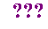

Binary Numbers

Outline
Decimal Numbers
- The numbers you see in everyday life are represented in the decimal or base 10 number system
Back to Contents
Computers and Binary Numbers
- Computers perform operations on numbers and only numbers (even
the characters in strings are represented as numbers)
- Since computer memory is finite, we can only work on numbers
that are of finite length
- that is, numbers can only be represented by a fixed number
of digits on a computer
- such numbers are said to have a fixed precision
- Further, because a computer essentially understands only current
flowing or not flowing, the number system used by computers is the
binary number system
Back to Contents
Converting from Binary to Decimal
- The binary number system uses the radix 2 as its base
- this means that an individual location can have one of two possible values - 0 or 1
- it also means that each binary place has a value of n*2k , where n is the bit at the binary place and k is the binary place itself
- for example,
110 = 1*22 + 1*21 + 0*20 = 4+2 = 6
1101 = 1*23 + 1*22 + 0*21 + 1*20 = 8+4+0+1 = 13
11011 = 1*24 + 1*23 + 0*22 + 1*21 + 1*20 = 16+8+0+2+1 = 27
- another way to view things...
Consider the decimal number 74,238
| Positional Value: | 104 | 103 | 102 | 101 | 100 | |
|---|
| | ``10,000s
place'' | ``1,000s
place'' | ``100s
place'' | ``10s
place'' | ``1s
place'' | |
|---|
| Digits of Decimal Number: | 7 | 4 | 2 | 3 | 8 | Dec Val |
|---|
| Dec. Value Based on Digit & "Place": | 70,000 | 4,000 | 200 | 30 | 8 | 74,238 |
|---|
| | Sum the above left to right to get --^ |
|---|
Now consider the binary number 10111
| Positional Value: | 24 | 23 | 22 | 21 | 20 | |
|---|
| | ``16s
place'' | ``8s
place'' | ``4s
place'' | ``2s
place'' | ``1s
place'' | |
|---|
| Bits of Binary Number: | 1 | 0 | 1 | 1 |
1 | Dec Val |
|---|
| Dec. Value Based on Bit & "Place": | 16 | 0 | 4 | 2 | 1 | 23 |
|---|
| | Sum the above left to right to get --^ |
|---|
Finally, for the binary number 101101
| Positional Value: | 25 | 24 | 23 | 22 | 21 | 20 | |
|---|
| | ``32s
place'' | ``16s
place'' | ``8s
place'' | ``4s
place'' | ``2s
place'' | ``1s
place'' | |
|---|
| Bits of Binary Number: | 1 | 0 | 1 | 1 |
0 | 1 | Dec Val |
|---|
| Dec. Value Based on Bit & "Place": | 32 | 0 | 8 | 4 | 0 | 1 | 45 |
|---|
| | Sum the above left to right to get -------^ |
|---|
Back to Contents
Converting from Decimal to Binary
- what about converting in the other direction -- from decimal to binary
- determine the highest power of 2 less than or equal to the
current decimal number
- subtract the current decimal number by the value
determined in Step 1
- take the remainder, which becomes the new current decimal
number
- keep track of power of two used and assign a 1 to that
binary place (all unassigned places contain a 0)
- repeat the process, starting with Step 1 (unless the
current decimal value is 0, then end)
- Example for decimal value 10
- (Step 1): 8 is the highest power of two less than or
equal to 10
- (Step 2): 10 - 8 = 2
- (Step 3): 2 becomes current decimal number
- (Step 4): place a '1' in the "8s place"
| Positional Value: | 24 | 23 | 22 | 21 | 20 |
|---|
| | ``16s
place'' | ``8s
place'' | ``4s
place'' | ``2s
place'' | ``1s
place'' |
|---|
| Bits of Binary Number: | 0 |
1 | 0 |
0 | 0 |
| Dec. Value Based on Bit & "Place": | 0 | 8 | 0 | 0 | 0 |
- (Step 5): 2 != 0, so jump to Step 1
- (Step 1): 2 is the highest power of two less than or
equal to 2
- (Step 2): 2 - 2 = 0
- (Step 3): 0 becomes current decimal number
- (Step 4): place a '1' in the "2s place"
| Positional Value: | 24 | 23 | 22 | 21 | 20 |
|---|
| | ``16s
place'' | ``8s
place'' | ``4s
place'' | ``2s
place'' | ``1s
place'' |
|---|
| Bits of Binary Number: | 0 |
1 | 0 |
1 | 0 |
| Dec. Value Based on Bit & "Place": | 0 | 8 | 0 | 2 | 0 |
- (Step 5): 0 == 0, so stop
- The final value is 1010
- Example for decimal value 37
- (Step 1): 32 is the highest power of two less than or
equal to 37
- (Step 2): 37 - 32 = 5
- (Step 3): 5 becomes current decimal number
- (Step 4): place a '1' in the "32s place"
| Positional Value: | 25 | 24 | 23 | 22 | 21 | 20 |
|---|
| | ``32s
place'' | ``16s
place'' | ``8s
place'' | ``4s
place'' | ``2s
place'' | ``1s
place'' |
|---|
| Bits of Binary Number: | 1 | 0 |
0 | 0 |
0 | 0 |
| Dec. Value Based on Bit & "Place": | 32 | 0 | 0 | 0 | 0 | 0 |
- (Step 5): 5 != 0, so jump to Step 1
- (Step 1): 4 is the highest power of two less than or
equal to 5
- (Step 2): 5 - 4 = 1
- (Step 3): 1 becomes current decimal number
| Positional Value: | 25 | 24 | 23 | 22 | 21 | 20 |
|---|
| | ``32s
place'' | ``16s
place'' | ``8s
place'' | ``4s
place'' | ``2s
place'' | ``1s
place'' |
|---|
| Bits of Binary Number: | 1 | 0 |
0 | 1 |
0 | 0 |
| Dec. Value Based on Bit & "Place": | 32 | 0 | 0 | 4 | 0 | 0 |
- (Step 4): place a '1' in the "4s place"
- (Step 5): 1 != 0, so jump to Step 1
- (Step 1): 1 is the highest power of two less than or
equal to 1
- (Step 2): 1 - 1 = 0
- (Step 3): 0 becomes current decimal number
| Positional Value: | 25 | 24 | 23 | 22 | 21 | 20 |
|---|
| | ``32s
place'' | ``16s
place'' | ``8s
place'' | ``4s
place'' | ``2s
place'' | ``1s
place'' |
|---|
| Bits of Binary Number: | 1 | 0 |
0 | 1 |
0 | 1 |
| Dec. Value Based on Bit & "Place": | 32 | 0 | 0 | 4 | 0 | 1 |
- (Step 4): place a '1' in the "1s place"
- (Step 5): 0 == 0, so stop
- The final value is 100101
- Once you get good at the conversion, you can simply write out
a table, listing the different places, and then place 1s in
appropriate slots until you produce the decimal number.
- For example, how would we fill out the following table for the
decimal number 79? Think about what should be in each box and then
click on it to reveal the correct answer.
| Positional Value: | 26 | 25 | 24 | 23 | 22 | 21 | 20 |
|---|
| | ``64s
place'' | ``32s
place'' | ``16s
place'' | ``8s
place'' | ``4s
place'' | ``2s
place'' | ``1s
place'' |
|---|
| Bits of Binary Number: |
 |
|
|
|
|
|
|
| Dec. Value Based on Bit & "Place": |
|
|
|
|
|
|
|
Back to Contents
Binary Addition
- Addition in Base 10
11
+19
----
30
- what do we do when we add 1+9?
- write down a 0 and carry the 1 to the next place
- Addition in Base 2
- in binary, what do we do when we add 1+1?
- write down a 0 and carry the 1 to the next place
- that is,
1
+1
----
10
- Note to make it clear which base we are using, we
sometimes write the radix of the base as a subscript for
each number, so the above may also be written as
12
+12
----
102
- An example of binary addition:
0001 (1 in base 2)
+ 0101 (5 in base 2)
including the carries, we get
1 (carry)
0001 (1 in base 2)
+ 0101 (5 in base 2)
------
0110 (6 in base 2)
- Another example of binary addition:
0011 (3 in base 2)
+ 0101 (5 in base 2)
including the carries, we get
11 (carry)
0011 (3 in base 2)
+ 0101 (5 in base 2)
------
1000 (8 in base 2)
- Addition in a computer deals with fixed precision values
- Thus, it is possible to add two numbers that are of fixed
size and produce a value beyond the range of the possible numbers in the system
- 13+5 = 18, but the maximum integer that can be
represented with four bits (1111) is 15 (i.e., 4 bits
represent 16 possible positive values 0-15)
- In the above example, we have what is called an overflow error.
- This overflow condition is usually flagged in the CPU as a bit within a register that is either 0 or 1
Obviously, a computer can represent negative integers
- this involves a completely different representation
scheme that takes into account the sign of the numbers
Similarly, a computer can represent numbers having fractional
parts
- for example, 10.259
- such numbers use a representation quite different from
the one used for integers
Both of these representations are beyond the scope of this course
For what we are doing, it is enough to know that we can
represent such numbers
Back to Contents